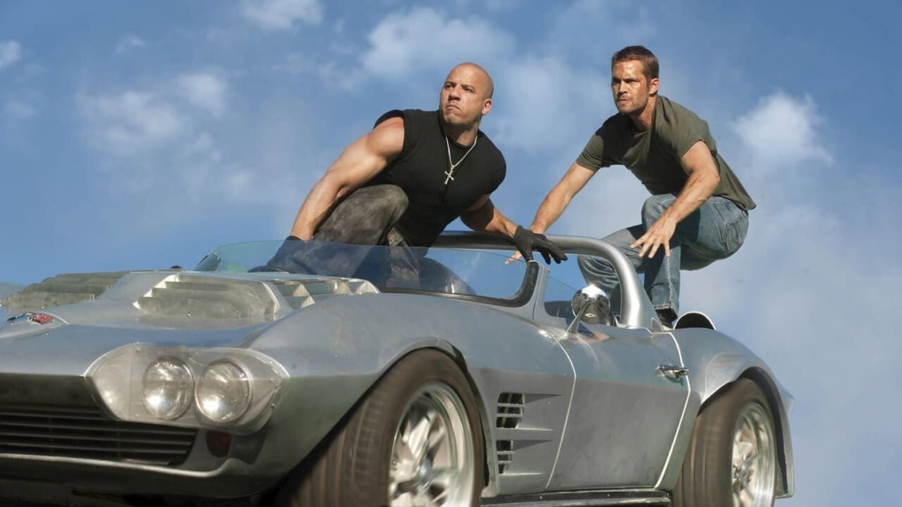

Fast & Furious 5 (2011): la recensione
Dal garage alla rapina di Rio: perché il quinto capitolo, con Dwayne Johnson e un caveau trascinato per la città, resta il più compatto della serie
Fast & Furious 5 è il film in cui la saga smette di essere una storia di macchine e scopre di essere una storia di squadra, perciò lo rivedremmo prima di tutti gli altri. Gli eccessi dei capitoli successivi nascono da qui, ma qui, a differenza di dopo, le auto pesano ancora.
Da film di corse a film di rapina
La mossa decisiva sta nel genere. Lo studio voleva portare la serie fuori dalla pura cultura delle auto per farne un vero franchise d'azione, e il quinto capitolo ci riesce con una storia di rapina. Dom Toretto evade con l'aiuto di Brian e Mia e i tre arrivano a Rio de Janeiro, ma il rifugio dura poco. Un microchip nascosto in una Ford GT40 rubata porta al tesoro del boss locale Hernan Reyes, e per portarlo via serve una squadra. Non diciamo come va a finire: il film è più divertente se non si conosce il piano.
Chi non conosce i primi quattro film può partire da qui, perché la struttura è quella classica del colpo: reclutare gli specialisti, studiare il bersaglio, provare, eseguire. Ogni volto della serie diventa un mestiere preciso, ed è la parte che ci convince di più perché dà a ciascuno un motivo per stare nell'inquadratura.
La scena che vale il film: il caveau per le strade di Rio
Due Dodge Charger agganciate a un caveau d'acciaio, e dietro un'intera città che non riesce a fermarle. Il caveau è il vero protagonista dell'inseguimento: non corre ma spazza via tutto quello che incontra, perciò funziona anche a chi le corse non interessano. Il produttore Neal Moritz parla di una sequenza di circa quattordici minuti, «tutta vera», e noi gli crediamo perché le auto che finiscono sotto quella massa si accartocciano come oggetti pesanti, e non come figure di un videogioco.
Il fatto che cambia come la guardi: ci vollero quattro settimane di preparazione e furono costruite sei versioni del caveau. Quella che gira davvero, rinforzata, pesava 3,6 tonnellate ed era guidata dallo stuntman Henry Kingi, e durante le riprese furono distrutti più di 200 veicoli. Alla seconda visione non contiamo più gli schianti ma quanto fu pianificato ogni passaggio, perciò il film ne esce più grande.
Hobbs contro Dom, in due lingue
L'altra scena che regge il film è il confronto tra Dom e l'agente Luke Hobbs, che dura circa cinque minuti e passa, come lo descrive Moritz, «attraverso muri e finestre». Prima lavorarono gli stuntman, poi gli attori, ma le settimane di prove non bastarono a evitare qualche piccolo infortunio. Il combattimento funziona perché Dwayne Johnson e Vin Diesel si equivalgono per stazza, quindi nessuno dei due può permettersi di perdere.
Nel doppiaggio italiano il duello cambia colore. Hobbs ha la voce di Luca Ward, quella grave che molti riconoscono da altri ruoli, mentre Dom è Massimo Corvo, più asciutto. In originale è un confronto tra due attori muscolari, ma da noi diventa uno scontro tra due timbri, perché le battute secche del federale arrivano come ordini. Per chi può, il film si gode in entrambe le lingue.
Rio, che per metà è Porto Rico
Le riprese principali andarono da luglio a ottobre 2010, tra Atlanta e Porto Rico, con una parte a Rio de Janeiro. Molte scene ambientate a Rio furono girate a Porto Rico, dove gli incentivi fiscali erano generosi. Se non lo si sa, non si nota, perché la città scorre addosso allo spettatore con i suoi vicoli e i suoi tetti, e il regista Justin Lin la usa come terreno di gioco per la squadra. Il film guadagna molto rispetto ai precedenti, perché quelli sembravano girati sempre nello stesso parcheggio.
Il punto debole e il debito con il cinema di rapina
Il debito più grande del film è con il cinema di rapina: non reinventa il genere ma lo rende più rumoroso. Il copione di Chris Morgan lavora per accumulo, perché le battute sono rapide e i personaggi si riconoscono in due scene. Il difetto è la verosimiglianza: un caveau da 3,6 tonnellate che attraversa una città senza che nessuno riesca a fermarlo sfida ogni logica, e anche i dialoghi sulla famiglia, ripetuti a ogni pausa, diventano un marchio che a un certo punto stanca. Per noi è il prezzo da pagare, ma resta un prezzo.
I numeri e come regge oggi
Con 125 milioni di dollari di budget, il film incassò circa 626 milioni al botteghino mondiale (a ottobre 2026): 209,8 negli Stati Uniti e in Canada, 416,3 nel resto del mondo. La critica lo accolse bene, anche se senza entusiasmi: Rotten Tomatoes registra il 77% di giudizi positivi su 207 recensioni, Metacritic 66 su 100 sulla base di 41 critici, mentre il pubblico in sala diede al film una A nel CinemaScore.
È una posizione nostra, e la dichiariamo: Fast & Furious 5 è il capitolo più equilibrato della saga. Tiene insieme azione concreta e squadra affiatata, perché ha un'idea di cinema popolare che non si prende troppo sul serio. Dura 130 minuti ma non pesano, perché il ritmo non cala mai, e c'è una scena nei titoli di coda, che non sveliamo, capace di rimettere in moto l'intera serie.
Dove vederlo e a chi lo consigliamo
A ottobre 2026 il film è in streaming su Netflix e Amazon Prime Video, e a noleggio su Apple TV Store e CHILI. La disponibilità cambia spesso, perciò conviene controllare prima di scegliere. In Italia uscì nelle sale il 4 maggio 2011, con Universal Pictures.
Lo consigliamo a chi cerca un film d'azione senza troppi pensieri per una serata tra amici, e a chi ha sempre snobbato la saga e vuole capire da dove arriva la sua fama. Non è per chi cerca realismo o sfumature, ma per chi vuole vedere una squadra che lavora bene mentre un caveau attraversa le strade. Per noi, da rivedere almeno una volta.
Domande frequenti
Quando è uscito Fast & Furious 5?
Negli Stati Uniti il 29 aprile 2011, in Italia il 4 maggio 2011, distribuito da Universal Pictures.
Quanto dura il film?
130 minuti.
Chi doppia Dwayne Johnson in italiano?
Luca Ward dà la voce all'agente Luke Hobbs; Massimo Corvo è Dom Toretto e Riccardo Rossi è Brian O'Conner.
Dove si può vedere in Italia?
A ottobre 2026 in streaming su Netflix e Amazon Prime Video, ma la disponibilità cambia: si noleggia anche su Apple TV Store e CHILI.